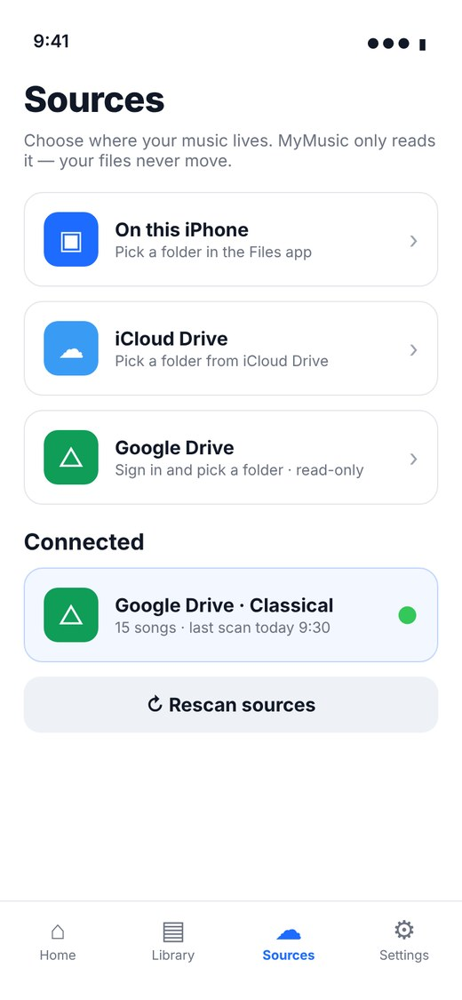
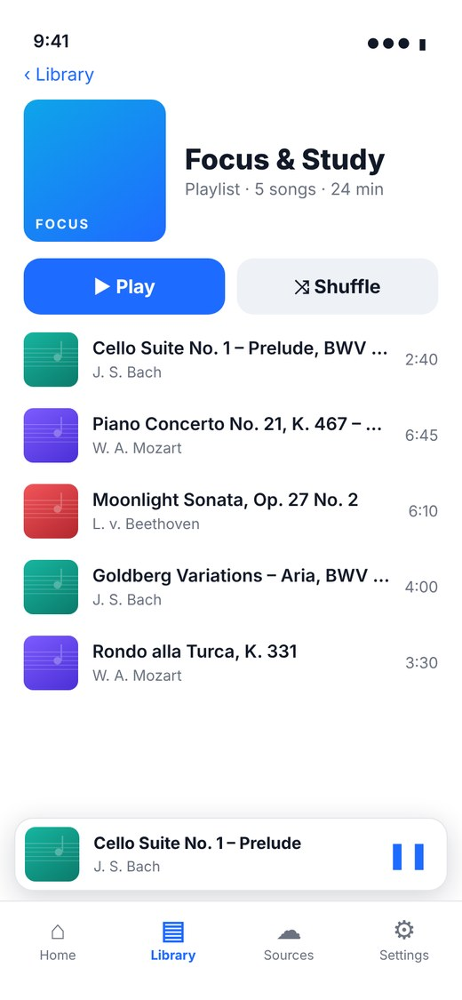
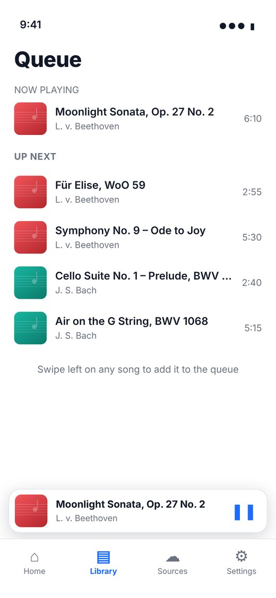
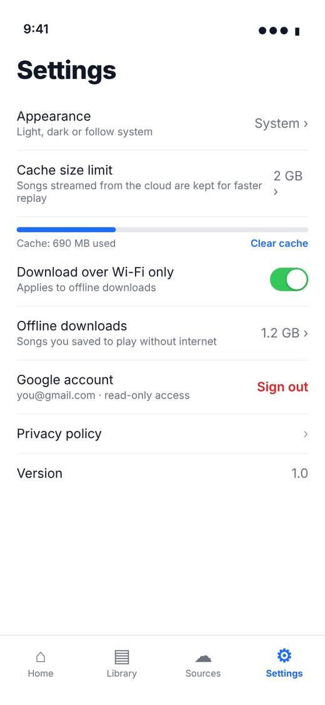

Guía de uso de MyMusic
Todo lo que necesitas para empezar a disfrutar de tu música en pocos minutos.
Descargar la guía en PDF (inglés)
1. Primeros pasos
Puedes estar escuchando música en unos dos minutos.
- Abre MyMusic y ve a la pestaña Fuentes (Sources).
- Elige dónde está tu música: una carpeta del iPhone, iCloud Drive o Google Drive.
- Espera al primer escaneo. MyMusic lee títulos, artistas, álbumes y carátulas. Puedes empezar a reproducir mientras termina.
- Toca un álbum en Inicio o en Biblioteca y pulsa Reproducir (Play).
La app tiene cuatro pestañas: Inicio (álbumes y listas recientes), Biblioteca, Fuentes y Ajustes. El minirreproductor de la parte inferior muestra lo que suena: tócalo para abrir el reproductor completo.
Las capturas de pantalla de esta guía están en inglés, el idioma de la app en esta versión.


2. Conecta tu música
MyMusic solo lee tu música. Nunca mueve, edita ni borra tus archivos.
En este iPhone
Elige On this iPhone y selecciona una carpeta en la app Archivos. MyMusic recuerda la carpeta.
iCloud Drive
Elige la carpeta donde guardas tu música. Las canciones que aún están en la nube se descargan al reproducirlas; la primera vez puede aparecer un breve indicador de «descargando».
Google Drive
Inicia sesión con tu cuenta de Google y elige una carpeta. MyMusic solicita acceso de solo lectura: puede listar y reproducir tus canciones, pero no modificarlas. Puedes cerrar sesión cuando quieras en Ajustes.
Mantén la biblioteca al día
¿Has añadido canciones? Pulsa Rescan sources. Solo se leen los archivos nuevos o modificados, así que es rápido.

3. Biblioteca y álbumes
Todo lo que conectes aparece en Biblioteca. Usa las etiquetas para cambiar entre Listas, Álbumes, Artistas y Canciones, y el selector de orden para ordenar por título, artista o añadido recientemente. Abre un álbum y pulsa Reproducir o Aleatorio. El botón redondo + crea una lista nueva.

4. Música de ejemplo: Mozart, Beethoven y Bach
Nuestras capturas usan obras clásicas de Mozart, Beethoven y Bach. Las composiciones son de dominio público y recomendamos grabaciones de Musopen, que ofrece grabaciones «gratis y sin restricciones de derechos de autor». Descarga las grabaciones, coloca cada compositor en su carpeta, añade la carpeta principal como fuente y MyMusic construirá estos álbumes:
Mozart – Essentials
| 1. Eine kleine Nachtmusik, K. 525 | Serenata No. 13 |
| 2. Symphony No. 40 in G minor, K. 550 | I. Molto allegro |
| 3. Piano Concerto No. 21, K. 467 | II. Andante |
| 4. Rondo alla Turca, K. 331 | Sonata para piano No. 11 |
| 5. Requiem, K. 626 | Lacrimosa |
Beethoven – Essentials
| 1. Symphony No. 5, Op. 67 | I. Allegro con brio |
| 2. Piano Sonata No. 14 “Moonlight”, Op. 27 No. 2 | I. Adagio sostenuto |
| 3. Für Elise, WoO 59 | Bagatela n.º 25 |
| 4. Symphony No. 9, Op. 125 | IV. “Ode to Joy” |
| 5. Piano Concerto No. 5 “Emperor”, Op. 73 | II. Adagio |
Bach – Essentials
| 1. Brandenburg Concerto No. 3, BWV 1048 | I. Allegro |
| 2. Cello Suite No. 1, BWV 1007 | Preludio |
| 3. Toccata and Fugue in D minor, BWV 565 | Órgano |
| 4. Air on the G String, BWV 1068 | Suite n.º 3 |
| 5. Goldberg Variations, BWV 988 | Aria |
5. Listas y favoritas
Crea listas para mezclar canciones de cualquier álbum o fuente, por ejemplo Focus & Study. Abre Biblioteca ▸ Listas, toca +, ponle nombre y añade canciones desde el menú de la canción. Toca ♥ en el reproductor para marcar una favorita; se reúnen en Liked songs.
Mantén pulsada una canción para abrir su menú: Like, Play next, Add to queue, Add to playlist… y Download for offline. Desliza una canción hacia la izquierda para añadirla a la cola.


6. Reproductor y cola
Toca el minirreproductor para abrir el reproductor completo: carátula grande, barra de progreso arrastrable, anterior / reproducir-pausa / siguiente, aleatorio y repetir. Desliza hacia abajo para cerrarlo. Queue muestra lo que suena y lo que viene después. MyMusic sigue sonando en segundo plano y desde la pantalla de bloqueo y el Centro de control.


7. Altavoces, sin conexión, ajustes
En el reproductor toca Play on… para elegir el iPhone, auriculares, un altavoz Bluetooth o un altavoz AirPlay. Empareja los dispositivos Bluetooth una vez en los Ajustes de iOS. Bluetooth conecta con un solo altavoz a la vez.
Las canciones que reproduces en streaming se guardan en una caché para repetirlas al instante; define su límite y bórrala en Settings. Para escuchar sin conexión elige Download for offline en una canción; puedes limitar las descargas a Wi-Fi. También puedes elegir apariencia clara, oscura o del sistema.


8. Solución de problemas
No aparecen mis canciones
Comprueba que los archivos sean MP3, M4A/AAC o FLAC y pulsa Rescan sources. Otros formatos se omiten.
Una canción de iCloud tarda en empezar
Puede estar aún en la nube; MyMusic la descarga al reproducirla. Comprueba que tienes conexión.
Google Drive dice que mi sesión ha caducado
Abre Ajustes, cierra sesión y vuelve a iniciarla.
Carátula o álbum incorrectos
MyMusic usa las etiquetas de tus archivos. Corrígelas con un editor de etiquetas en tu ordenador y vuelve a escanear.
El sonido se corta al alejarme del altavoz
Bluetooth tiene un alcance limitado y el audio sale de tu iPhone. Mantente en el alcance o vuelve a elegir el iPhone como salida.
Liberar espacio
Usa Settings ▸ Clear cache o elimina las descargas sin conexión. Tus archivos originales nunca se tocan.